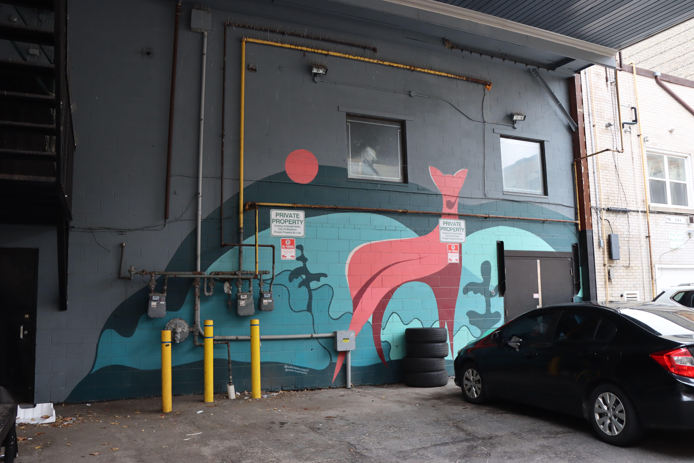

Also known as Morningstar, Alanah is a French-First Nations artist.
Her work promotes Indigenous art and culture in urban areas. In her works,
Morningstar gives hope to a younger generation trying to find their identity through art.
She uses a lot of imagery and symbolisms found in her culture to illustrate in her paintings.

This mural highlights the importance of living in a community.
Each animal is surrounded by its elements as well as being part of each other’s elements.
The harmony achieved in this artwork showcases the beauty of building a healthy community
and contributing to the happiness of others. The bright and joyful colors give life to the
animals found in the artist’s culture.